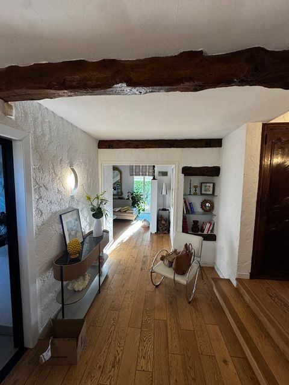
Rénovation complète
De la dépose au second œuvre : on reprend toute la maison, un seul interlocuteur du début à la fin.
Maison, villa, salle de bain, cuisine, carrelage. Une équipe soignée pour tout l’ouest toulousain, un seul interlocuteur du devis à la réception.
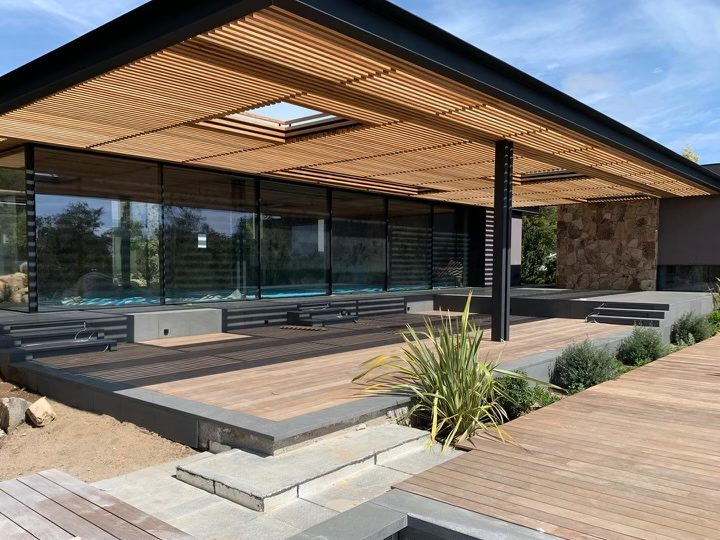
Ce qu’on fait
Rénovation générale du bâtiment : on coordonne tous les corps de métier pour vous éviter de courir après dix artisans.

De la dépose au second œuvre : on reprend toute la maison, un seul interlocuteur du début à la fin.
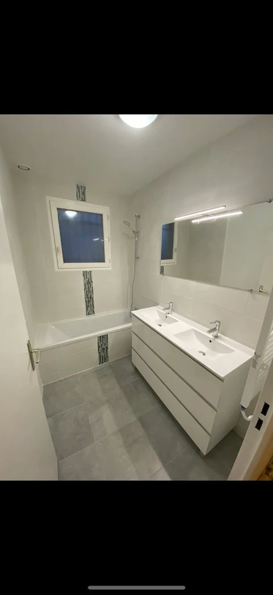
Douche à l’italienne, carrelage, plomberie, faïence : une salle de bain refaite entièrement, sans surprise.
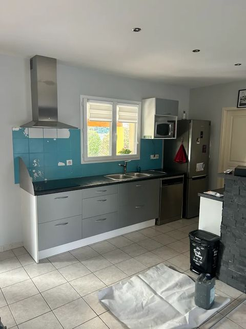
Dépose, réseaux, revêtements et pose : votre cuisine repensée et remise à neuf.
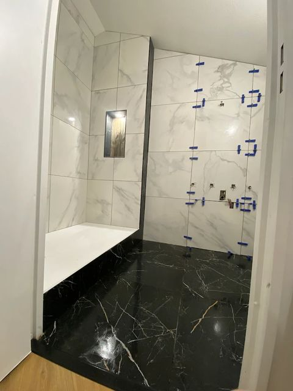
Sols et murs posés au millimètre, joints nets — grands formats comme mosaïque.
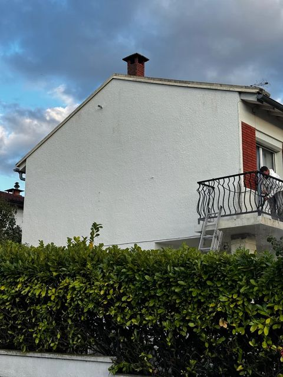
Isolation, enduit et ravalement : une maison plus confortable et une façade nette.
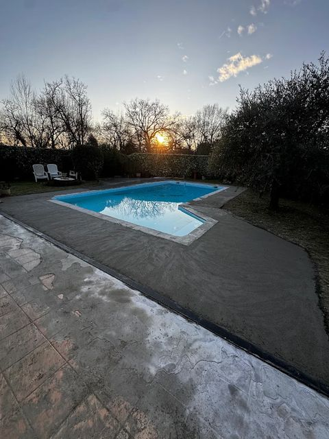
Terrasses, contours de piscine, dallage : on prolonge la maison dehors.
Avant / Après
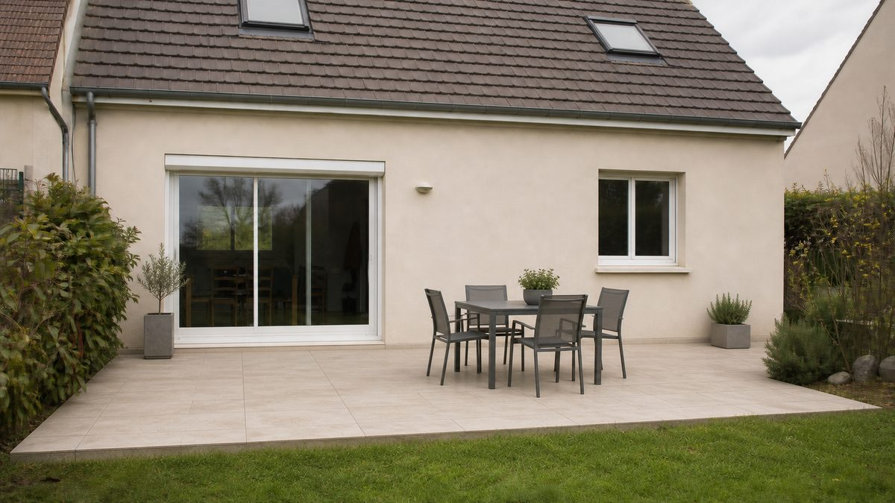
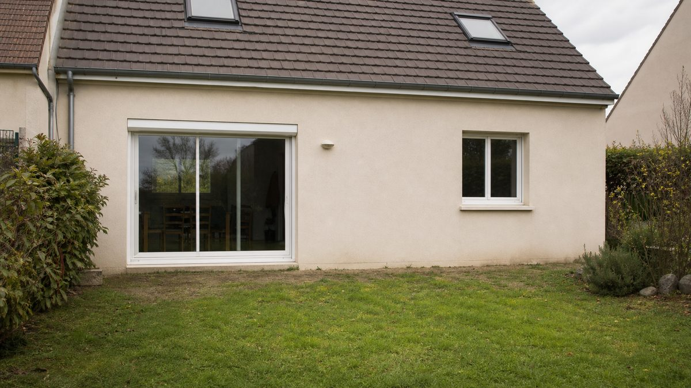
Avant AprèsCréation de terrasse carrelée — ouest toulousain
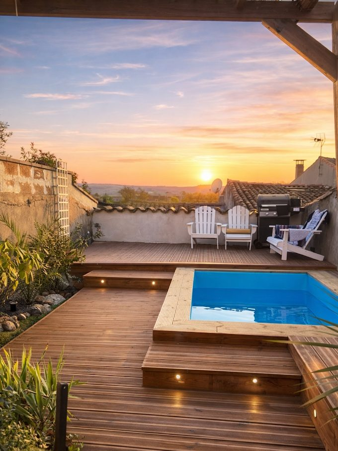
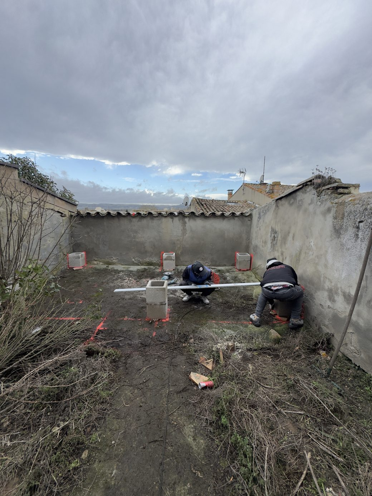
Avant AprèsTerrasse bois & piscine dans une cour — Castelnaudary (11)
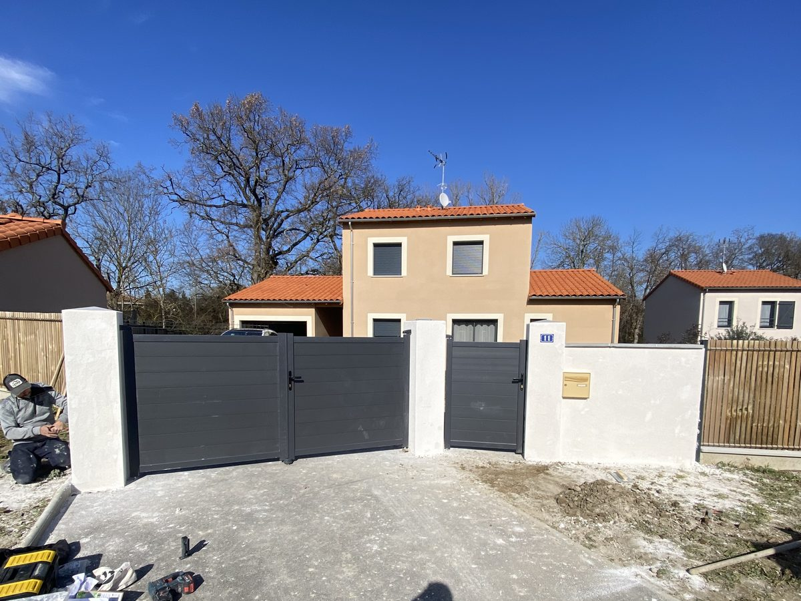
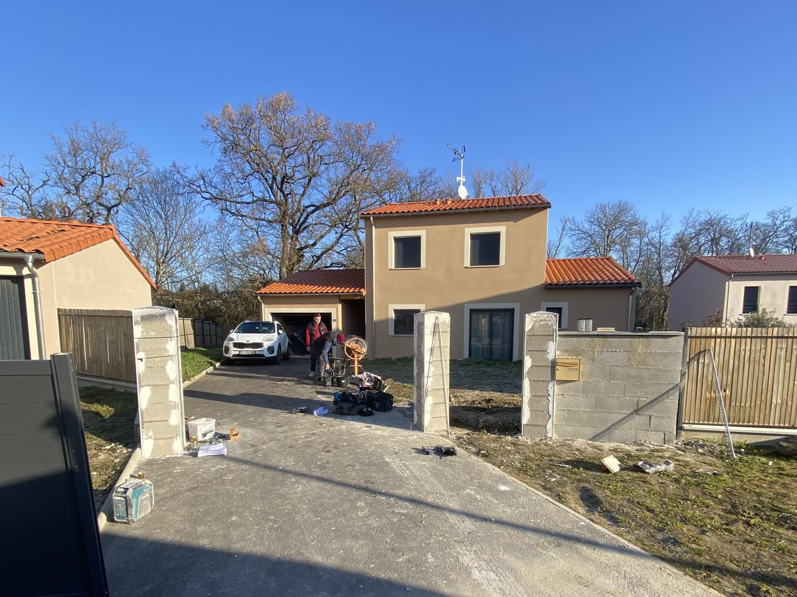
Avant AprèsMur de clôture enduit & pose de portail — Merville (31)
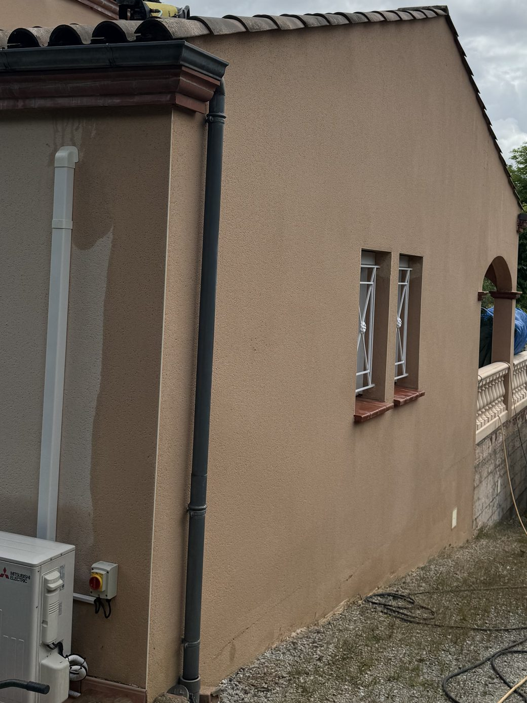
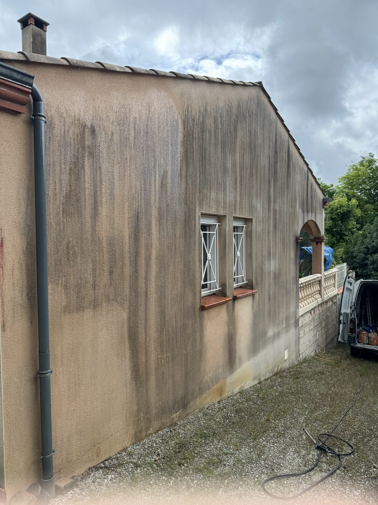
Avant AprèsNettoyage de façade & démoussage — Pompertuzat (31)
Réalisations
De Tournefeuille à Castelnaudary, en passant par Merville, Pompertuzat ou Saint-Orens : voici où on est intervenu ces derniers mois.
Ce que disent les clients
★★★★★Rénovation complète de notre villa : qualité des matériaux, souci du détail et professionnalisme de l’équipe.
Avis Google — Rénovation complète de villa
★★★★★Salle de bain, cuisine et carrelage refaits parfaitement et avec goût, sans prix exorbitant.
Avis Google — Salle de bain, cuisine & carrelage
★★★★★Isolation de notre salon : nous sommes ravis du travail effectué.
Avis Google — Isolation
★★★★★Une équipe que l’on recommande sans hésitation.
Avis Google — Client particulier
Comment ça se passe
Vous appelez ou remplissez le formulaire. On échange sur votre projet et vos délais.
On vient sur place, on prend les mesures et on comprend précisément ce que vous voulez.
Vous recevez un devis clair, poste par poste. Gratuit et sans engagement.
On cale ensemble les dates et l’organisation du chantier.
L’équipe exécute les travaux, chantier propre et point régulier avec vous.
On vérifie tout ensemble à la fin. Vous validez, on ne part pas avant.
Où on intervient
Basés au 2 Impasse du Chasselas à Tournefeuille (31170), nous intervenons sur toutes les communes limitrophes.
Et au-delà
Pour un chantier complet, on se déplace sur toute la Haute-Garonne et les départements voisins. Un doute sur votre secteur ? Appelez-nous, on vous répond tout de suite.
Conseils
Les prix, les matériaux et les démarches, expliqués sans détour et illustrés par nos propres chantiers.
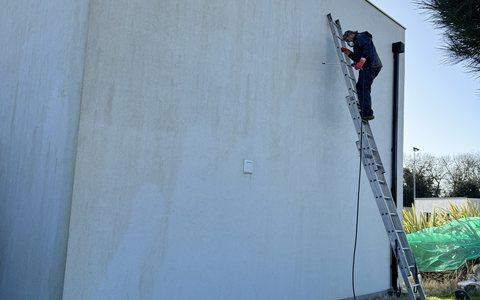
Les tarifs par technique, pourquoi le karcher abîme un crépi, et la vérité sur le ravalement soi-disant obligatoire tous les dix ans.
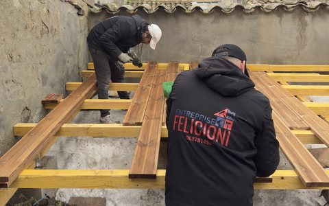
Prix au m² par essence, le poste que les devis oublient, la déclaration en mairie et l’entretien qui évite de tout refaire dans cinq ans.
Contact